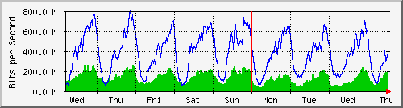
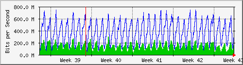
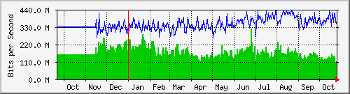

Traffic Analysis for Gi1/0/8 -- spider.sky
| System: | spider.sky in stoyka |
| Maintainer: | falcon@skyinet.org |
| Description: | GigabitEthernet1/0/8 new7204cisco-out |
| ifType: | ethernetCsmacd (6) |
| ifName: | Gi1/0/8 |
| Max Speed: | 1000.0 Mbits/s |
| Ip: | No Ip (No DNS name) |
The statistics were last updated Thursday, 26 October 2017 at 12:55,
at which time 'spider.sky' had been up for 8 days, 10:32:41.
`Daily' Graph (5 Minute Average)

|
Max |
Average |
Current |
| In |
256.8 Mb/s (25.7%) |
115.2 Mb/s (11.5%) |
153.4 Mb/s (15.3%) |
| Out |
779.4 Mb/s (77.9%) |
329.3 Mb/s (32.9%) |
391.5 Mb/s (39.1%) |
`Weekly' Graph (30 Minute Average)

|
Max |
Average |
Current |
| In |
261.8 Mb/s (26.2%) |
130.6 Mb/s (13.1%) |
188.9 Mb/s (18.9%) |
| Out |
796.1 Mb/s (79.6%) |
379.0 Mb/s (37.9%) |
368.5 Mb/s (36.9%) |
`Monthly' Graph (2 Hour Average)

|
Max |
Average |
Current |
| In |
297.4 Mb/s (29.7%) |
133.6 Mb/s (13.4%) |
159.3 Mb/s (15.9%) |
| Out |
740.9 Mb/s (74.1%) |
372.3 Mb/s (37.2%) |
318.4 Mb/s (31.8%) |
`Yearly' Graph (1 Day Average)

|
Max |
Average |
Current |
| In |
317.1 Mb/s (31.7%) |
167.3 Mb/s (16.7%) |
112.8 Mb/s (11.3%) |
| Out |
434.4 Mb/s (43.4%) |
347.3 Mb/s (34.7%) |
369.3 Mb/s (36.9%) |
| GREEN ### |
Incoming Traffic in Bits per Second |
| BLUE ### |
Outgoing Traffic in Bits per Second |